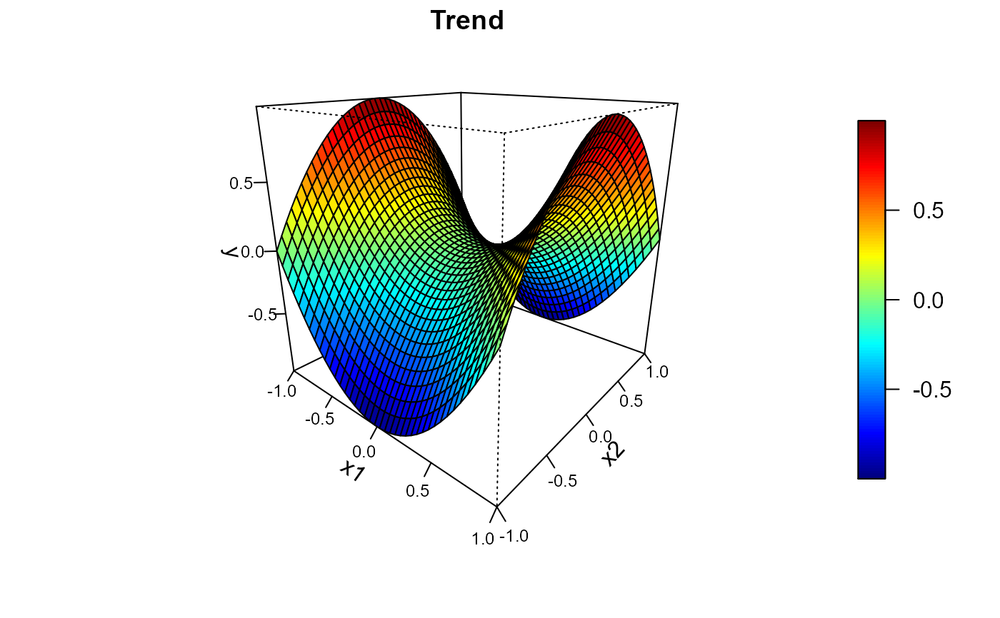
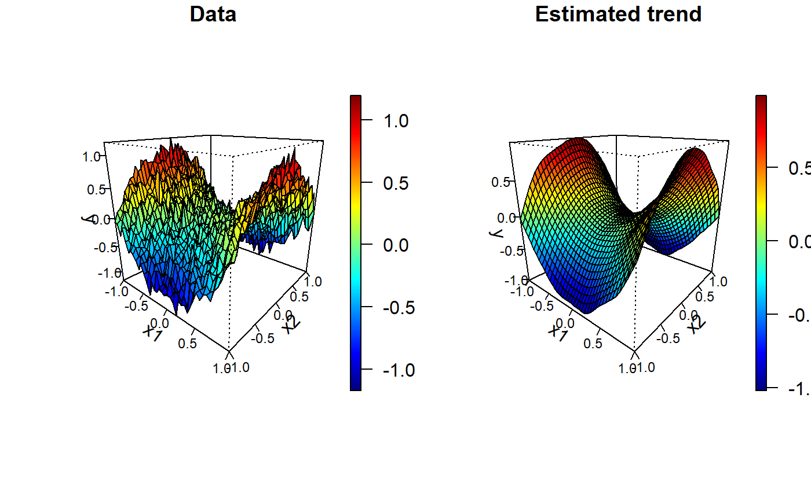

spersp (generic function) draws a perspective plot of a surface over
the x-y plane with the facets being filled with different colors
and (optionally) adds a legend strip with the color scale
(calls splot and persp).
spersp(x, ...) # S3 method for default spersp(x = seq(0, 1, len = nrow(z)), y = seq(0, 1, len = ncol(z)), z, s = z, slim = range(s, finite = TRUE), col = jet.colors(128), breaks = NULL, legend = TRUE, horizontal = FALSE, legend.shrink = 0.8, legend.width = 1.2, legend.mar = ifelse(horizontal, 3.1, 5.1), legend.lab = NULL, bigplot = NULL, smallplot = NULL, lab.breaks = NULL, axis.args = NULL, legend.args = NULL, graphics.reset = FALSE, xlab = NULL, ylab = NULL, zlab = NULL, theta = 40, phi = 20, ticktype = "detailed", cex.axis = 0.75, ...) # S3 method for data.grid spersp(x, data.ind = 1, s = x[[data.ind]], xlab = NULL, ylab = NULL, zlab = NULL, ...)
| x | grid values for |
|---|---|
| ... | additional graphical parameters (to be passed to |
| y | grid values for |
| z | matrix containing the values to be plotted (NAs are allowed).
Note that |
| s | matrix containing the values used for coloring the facets. |
| slim | limits used to set up the color scale. |
| col | color table used to set up the color scale (see |
| breaks | (optional) numeric vector with the breakpoints for the color scale:
must have one more breakpoint than |
| legend | logical; if |
| horizontal | logical; if |
| legend.shrink | amount to shrink the size of legend relative to the full height or width of the plot. |
| legend.width | width in characters of the legend strip. Default is 1.2, a little bigger that the width of a character. |
| legend.mar | width in characters of legend margin that has the axis. Default is 5.1 for a vertical legend and 3.1 for a horizontal legend. |
| legend.lab | label for the axis of the color legend. Default is no label as this is usual evident from the plot title. |
| bigplot | plot coordinates for main plot. If not passed these will be determined within the function. |
| smallplot | plot coordinates for legend strip. If not passed these will be determined within the function. |
| lab.breaks | if breaks are supplied these are text string labels to put at each break value. This is intended to label axis on a transformed scale such as logs. |
| axis.args | additional arguments for the axis function used to create
the legend axis (see |
| legend.args | arguments for a complete specification of the legend
label. This is in the form of list and is just passed to the |
| graphics.reset | logical; if |
| xlab | label for the x axis, defaults to a description of |
| ylab | label for the y axis, defaults to a description of |
| zlab | label for the z axis, defaults to a description of |
| theta | x-y rotation angle for perspective (azimuthal direction). |
| phi | z-angle for perspective (colatitude). |
| ticktype | character; |
| cex.axis | magnification to be used for axis annotation (relative to the
current setting of |
| data.ind | integer (or character) with the index (or name) of the component
containing the |
Invisibly returns a list with the following 4 components:
the viewing transformation matrix (see persp for details),
a 4 x 4 matrix that can be used to superimpose additional graphical elements
using the function trans3d.
plot coordinates of the main plot. These values may be useful for drawing a plot without the legend that is the same size as the plots with legends.
plot coordinates of the secondary plot (legend strip).
previous graphical parameters (par(old.par)
will reset plot parameters to the values before entering the function).
After exiting, the plotting region may be changed
(par("plt")) to make it possible to add more features to the plot
(set graphics.reset = FALSE to avoid this).
# # Regularly spaced 2D data nx <- c(40, 40) # ndata = prod(nx) x1 <- seq(-1, 1, length.out = nx[1]) x2 <- seq(-1, 1, length.out = nx[2]) trend <- outer(x1, x2, function(x,y) x^2 - y^2) spersp( x1, x2, trend, main = 'Trend', zlab = 'y')# # Multiple plots set.seed(1) y <- trend + rnorm(prod(nx), 0, 0.1) x <- as.matrix(expand.grid(x1 = x1, x2 = x2)) # two-dimensional grid # local polynomial kernel regression lp <- locpol(x, y, nbin = nx, h = diag(c(0.3, 0.3))) # 1x2 plot old.par <- par(mfrow = c(1,2)) spersp( x1, x2, y, main = 'Data') spersp(lp, main = 'Estimated trend', zlab = 'y')par(old.par)